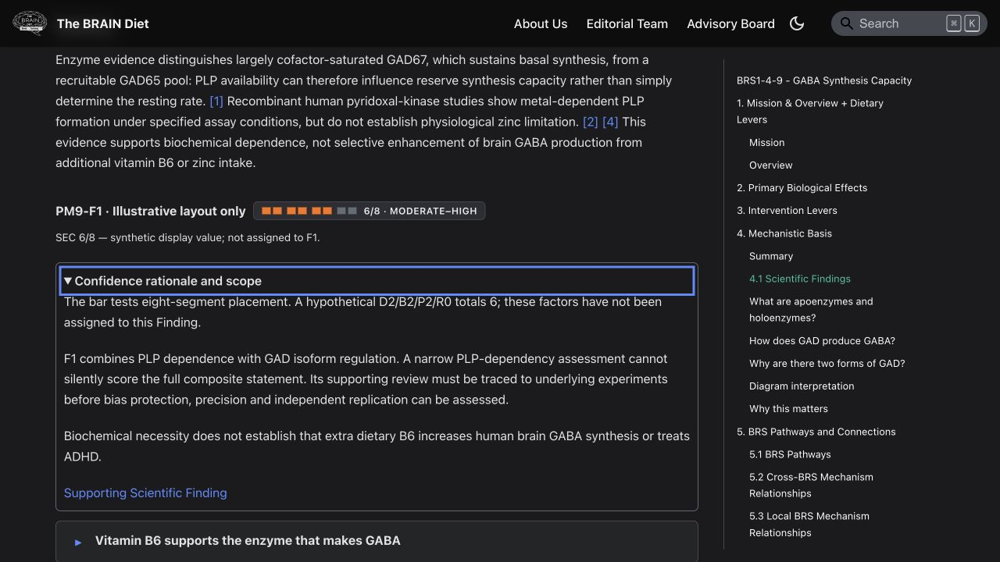
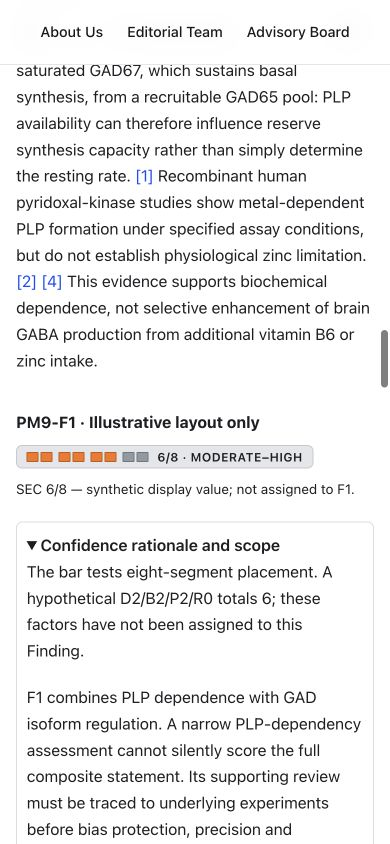

Isolated SEC PM preview — implementation and verification
Open the localhost preview · Read the rubric and cap proposal
Isolated checkout at isolated SEC checkout; detached baseline e360e38bcd6864e5e4021f7add74dc4611befd55. Cursor and other worktrees remain untouched. Local verification preceded the separately authorised GitHub review delivery. No production deployment or full production build.
Isolation result
- Default disabled: the two-line
docusaurus.config.ts change excludes **/system/sec-calibration/** unless SEC_CALIBRATION_PREVIEW === 'true'. Internal-doc inclusion does not override it. Absent, false and non-true values remain excluded in production and development configuration tests.
- The actual disabled Docusaurus document load produced no preview route, sidebar entry or ontology document. This checks loaded/generated metadata; no full production build was run.
- Enabled: one route at
/docs/system/sec-calibration/gaba, ID sec-calibration-gaba-preview. Front matter contains only id, title, slug, hide_title and list_image. No scientific identities, tags, evidence or relationships are registered there.
- The enabled ontology projection contains the ordinary neutral document, with no scientific metadata. It does not treat that document as a PM or Finding. The preview's copied evidence is body-rendering data, never canonical scientific front matter.
- PM/Scientific Finding and phenome inventories use the canonical mechanism-page scope. Food strategies and input mappings scan canonical biological-target directories. The preview is outside those scopes. Live plugin data contains no preview source record, route or calibration identifier.
- Normal Netlify builds with no flag exclude the preview through the same document-loading option; no Netlify settings changed.
Template and confidence linkage
The full canonical body is retained verbatim apart from replacing the ScientificFinding JSX component tag with its preview wrapper. All numbered sections, 7 Finding render instances, Scientific Lesson, references and limitations survive. Existing dietary and food disclosures are rendered using the existing enhancer with locally supplied display data; canonical scientific records are not duplicated in document metadata.
Actual Vitamin B6 → F1 + F2 remains Not scored. Glutamate → F1 remains Not scored. Legacy SOP/lifestyle entries lacking an explicit Finding link remain Not scored. One synthetic fixture supplies the illustrative six-segment value and its repeated display examples. No actual Finding or lever receives that value. No average, maximum, score-based admission or PM-wide score is calculated.
All three scientific calibration examples and the proposed D/B/P/R anchors/caps are documented in the separate proposal. Real scores remain pending scientific approval. Current canonical storage still permits only not-yet-scored.
Focused verification
- 47/47 passed: preview isolation/template/linkage tests, copied eight-increment presentation tests, and dietary-lever traceability tests.
- Broader governance 30/33: three unchanged-baseline failures reproduced on a separate clean archive of current main: GABA Finding-section freshness, GABA expected heading names, and the Type D shared-constraint wording assertion. None was fixed or suppressed.
git diff --check passed. New untracked files also passed individual whitespace checks.- Canonical PMs, food/substance records, registry, contracts, generators and tracked mappings have no diff. Canonical GABA SHA-256:
e11e2ddbfb1c45702232b869e31cbb847f759e95504bcb734fcdc21fea141dd4.
- Browser confirmed full section structure, 7 Finding wrappers and 8 compact unscored annotations (two dietary/biochemical entries and six legacy intervention entries).
- Opened the dietary disclosure: all six atoms, limitations, citations and original food-source presentation remain available. Opened SOP/lifestyle groups: all original entries survive.
- Native confidence details are initially collapsed and keyboard-operable. Enter opened the rationale and showed a visible focus outline. Escape closed the existing input-evidence popup.
- Dark and light themes checked. Mobile width 390 px: document width also 390 px, no horizontal overflow; indicator and qualification text remained readable. Temporary viewport override was reset.
Local environment and remaining limitations
The clean checkout lacked seven ignored runtime JSON imports normally produced by prebuild. Existing six-BRS runtime snapshots were copied from the prior isolated profiling checkout after confirming canonical docs/registry were byte-identical and relevant generator/data dependencies had no source diff. The food-strategy runtime JSON was copied from the tracked rollup. No persisted mapping regeneration was performed. The existing development plugin still performs its normal live in-memory generation.
The initial native watcher hit EMFILE. Only this preview server was restarted with WATCHPACK_POLLING=2000; no configuration or other server changed. The final development client compiled successfully.
The copied canonical MDX emits React development warnings for class and nested paragraph markup in the phenome scoring key. That markup is unchanged from the canonical body; it has not been repaired in this scientific pilot. No production hydration claim is made. The tested client disclosures and navigation work.
The widget currently collapses raw zero and missing assessments into its unscored visual state; explicit adjacent preview text preserves their difference. Scoring caps and storage representation remain unapproved. GABA F1 is composite; a narrow PLP score cannot be reused for the whole F1 or the broader B6 supply claim. Existing SOP/lifestyle text needs explicit proposition/Finding adjudication before numerical confidence reuse.
Exact changed source and preview files (11)
docs/system/sec-calibration/gaba.mdxdocusaurus.config.tsscripts/evidence-confidence-indicator.test.mjsscripts/sec-calibration-preview.test.mjssrc/components/EvidenceConfidenceIndicator/index.tsxsrc/components/EvidenceConfidenceIndicator/secDisplay.mjssrc/components/EvidenceConfidenceIndicator/styles.module.csssrc/components/SecCalibrationPreview/index.tsxsrc/components/SecCalibrationPreview/styles.module.csssrc/pages/evidence-confidence-indicator.module.csssrc/pages/evidence-confidence-indicator.tsx
The copied presentation test was adjusted to retain current-main canonical governance; Cursor's unapproved formula assertion was not imported along with its schema edits. No schema or validator source was changed.
Visual confirmation
Dark theme, keyboard focus and expanded rationale:

Mobile light theme:

Stopped for scientific and visual approval. No final scores, admissions or authoritative contract changes.